배우기 전에 먼저 해 보세요. 틀려도 괜찮아요.
Niemand muss Erfahrung haben.은 무슨 뜻일까요?
niemand는 '아무도 ~ 않다'예요.
Das ist die Trainerin, die den Kurs leitet.에서 die den Kurs leitet는 누구를 설명하나요?
쉼표 뒤의 문장이 앞의 명사를 설명해요.
A2.2 Mittendrin · Lektion 5
여가와 모임
음성은 준비 중이에요. 듣기 단추와 받아쓰기는 음성이 올라오면 쓸 수 있어요. 그동안은 글을 읽으면서 공부해요.
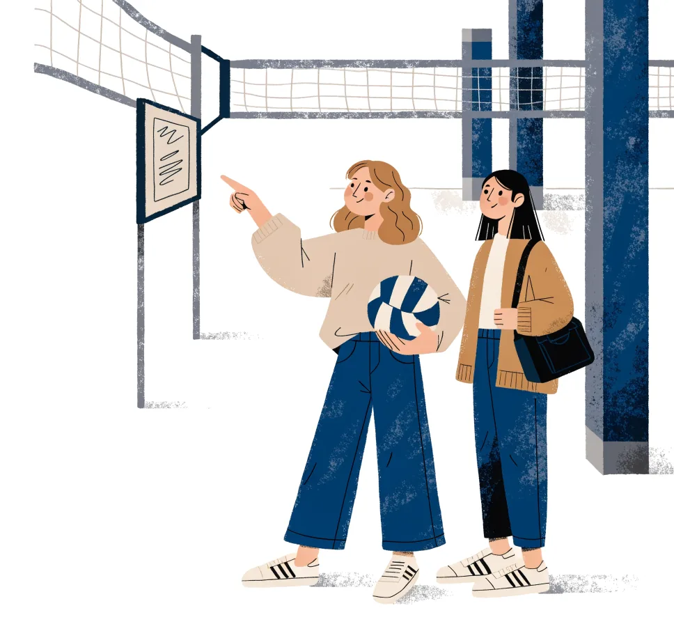
독일에서 사람을 사귀는 가장 좋은 길은 같이 무언가를 하는 거예요. 대학에는 스포츠 강좌가 있고, 동네마다 운동과 취미 동호회가 있어요. 이 과에서는 여가를 소개하고, 모임에 들어가고, 사람과 물건을 관계문으로 자세히 설명하는 법을 배워요.
문법 Relativsätze (Nominativ, Akkusativ), jemand, niemand, etwas, nichts
과제대학대학 스포츠(Hochschulsport) 강좌 신청하기
과제직장퇴근 후 다닐 동호회를 찾아 가입하기
이 과를 마치면 여가 활동을 소개하고, 모임에 가입하고, 사람과 장소를 자세히 설명할 수 있어요.
이 과에서 쓸 말이에요.
배우기 전에 먼저 해 보세요. 틀려도 괜찮아요.
Niemand muss Erfahrung haben.은 무슨 뜻일까요?
niemand는 '아무도 ~ 않다'예요.
Das ist die Trainerin, die den Kurs leitet.에서 die den Kurs leitet는 누구를 설명하나요?
쉼표 뒤의 문장이 앞의 명사를 설명해요.
Lektion 4의 낱말 다섯 개를 다시 떠올려 보세요.
5월의 점심때, 대학 식당이에요. Jiu는 4월에 공부를 시작한 뒤로 운동을 못 하고 있어요.
들으면서 찾아보세요. Jiu는 어느 강좌에 등록하려고 하나요?
화요일 점심때, 회사 휴게실이에요. Dohyun의 아들 Minjun은 여섯 살이고, 독일에 온 지 아홉 달 됐어요.
들으면서 찾아보세요. Dohyun은 수요일 저녁에 무엇을 하러 가나요?
월요일 오전이에요. Sora가 누리집에서 본 사진 동호회에 전화해요.
들으면서 찾아보세요. 사진 동호회는 언제 모이나요?
세 대화를 듣고 답하세요.
Lena는 어떤 강좌를 듣나요?
Jiu는 어떤 강좌를 찾나요?
Der Yogakurs ist nur für Leute mit Erfahrung.
초보자도 할 수 있어요.
Minjun은 어떤 운동을 좋아하나요?
체험 훈련은 얼마인가요?
Dohyun hat früher oft Tischtennis gespielt.
사진 동호회는 언제 모이나요?
Im Fotoclub braucht man eine teure Kamera.
휴대폰으로 찍는 사람도 많아요.
낱말 47개예요. 명사는 der, die, das를 색으로 구분했어요.
die Freizeit 여가, 쉬는 시간
In meiner Freizeit mache ich Sport.저는 쉬는 시간에 운동을 해요.
der Verein, die Vereine 동호회, 단체
Ich bin in einem Verein.저는 동호회에 다녀요.
das Mitglied, die Mitglieder 회원
Der Verein hat achtzig Mitglieder.그 동호회는 회원이 여든 명이에요.
der Mitgliedsbeitrag, die Mitgliedsbeiträge 회비
Der Mitgliedsbeitrag ist zehn Euro im Monat.회비는 한 달에 10유로예요.
das Training 훈련, 연습
Das Training ist am Dienstag.연습은 화요일이에요.
trainieren (hat trainiert) 훈련하다, 운동하다
Wir trainieren zweimal pro Woche.우리는 일주일에 두 번 연습해요.
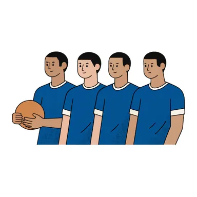
die Mannschaft, die Mannschaften 팀
Unsere Mannschaft spielt am Samstag.우리 팀은 토요일에 경기해요.
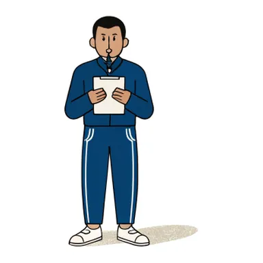
der Trainer, die Trainer 코치
Der Trainer ist sehr nett.코치가 아주 친절해요.
das Spiel, die Spiele 경기, 놀이
Das Spiel beginnt um drei.경기는 3시에 시작해요.
gewinnen (hat gewonnen) 이기다
Wir haben das Spiel gewonnen.우리가 경기에서 이겼어요.
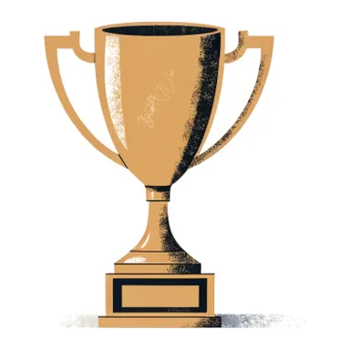
das Turnier, die Turniere 대회
Am Samstag ist ein Turnier.토요일에 대회가 있어요.
der Ball, die Bälle 공
Hast du einen Ball?공 있어요?
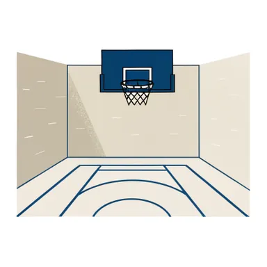
die Sporthalle, die Sporthallen 체육관
Der Kurs ist in der Sporthalle.그 강좌는 체육관에서 해요.
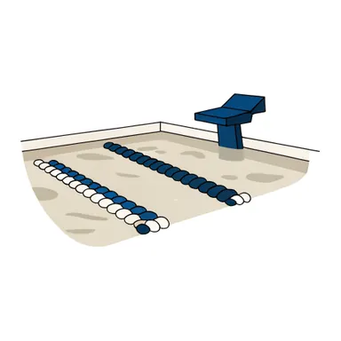
das Schwimmbad, die Schwimmbäder 수영장
Ich gehe ins Schwimmbad.저는 수영장에 가요.
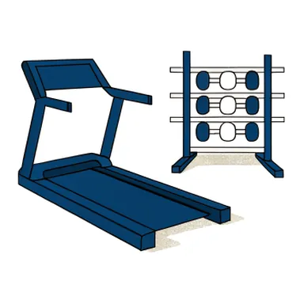
das Fitnessstudio, die Fitnessstudios 운동 시설, 헬스장
Dohyun geht ins Fitnessstudio.Dohyun은 헬스장에 가요.
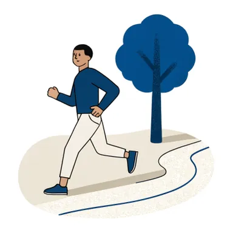
joggen (ist gejoggt) 달리기를 하다
Ich jogge im Park.저는 공원에서 달리기를 해요.
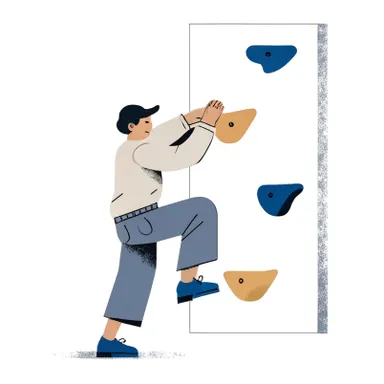
klettern (ist geklettert) 암벽을 타다, 기어오르다
Jiu möchte klettern.Jiu는 암벽을 타 보고 싶어 해요.
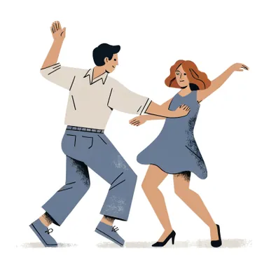
tanzen (hat getanzt) 춤추다
Sora tanzt gern.Sora는 춤추는 걸 좋아해요.
singen (hat gesungen) 노래하다
Ich singe gern.저는 노래하는 걸 좋아해요.
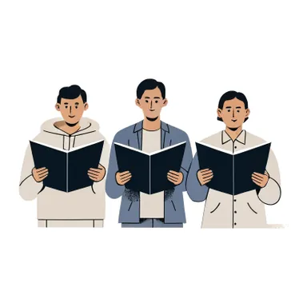
der Chor, die Chöre 합창단
Der Chor trifft sich am Montag.합창단은 월요일에 모여요.
mitmachen (hat mitgemacht) 함께하다, 참여하다
Kann ich mitmachen?같이 해도 돼요?
ausprobieren (hat ausprobiert) 해 보다
Ich möchte Yoga ausprobieren.요가를 해 보고 싶어요.
anbieten (hat angeboten) 제공하다, 열다
Die Universität bietet viele Kurse an.대학은 강좌를 많이 열어요.
das Probetraining 체험 훈련
Das Probetraining ist kostenlos.체험 훈련은 무료예요.
der Anfänger, die Anfänger 초보자
Der Kurs ist für Anfänger.그 강좌는 초보자를 위한 것이에요.
die Gruppe, die Gruppen 모임, 무리
Die Gruppe ist sehr nett.그 모임 사람들은 아주 친절해요.
sich treffen (du triffst dich, hat sich getroffen) 만나다, 모이다
Wir treffen uns jeden Dienstag.우리는 화요일마다 모여요.
kennenlernen (hat kennengelernt) 알게 되다, 사귀다
Im Verein lernt man Leute kennen.동호회에서 사람들을 사귀어요.
vorstellen (hat vorgestellt) 소개하다
Ich stelle sie dir vor.그 사람을 소개해 줄게요.
regelmäßig 꾸준히, 규칙적으로
Ich mache regelmäßig Sport.저는 꾸준히 운동해요.
einmal pro Woche 일주일에 한 번
Wir trainieren einmal pro Woche.우리는 일주일에 한 번 연습해요.
die Warteliste, die Wartelisten 대기자 명단
Der Kurs ist voll, aber es gibt eine Warteliste.강좌는 찼지만 대기자 명단이 있어요.
der Hochschulsport 대학 스포츠
Der Hochschulsport ist günstig.대학 스포츠는 싸요.
Spaß machen 재미있다
Klettern macht Spaß.암벽 타기는 재미있어요.
gemeinsam 함께
Wir kochen gemeinsam.우리는 함께 요리해요.
jemand 누군가
Kennst du jemanden im Verein?동호회에 누구 아는 사람 있어요?
niemand 아무도 (~ 않다)
Niemand muss Erfahrung haben.경험은 아무도 없어도 돼요.
nichts 아무것도 (~ 않다)
Das Probetraining kostet nichts.체험 훈련은 돈이 들지 않아요.
sportlich 운동을 즐기는, 운동을 잘하는
Markus ist sehr sportlich.Markus는 운동을 아주 즐겨요.
fit 몸이 튼튼한
Ich möchte fit bleiben.저는 몸을 튼튼하게 지키고 싶어요.
aktiv 활동적인
Sora ist sehr aktiv.Sora는 아주 활동적이에요.
spannend 흥미진진한
Das Spiel war spannend.경기가 흥미진진했어요.
lustig 재미있는, 웃긴
Der Trainer ist lustig.코치가 재미있어요.
entspannt 편안한, 느긋한
Nach dem Yoga bin ich entspannt.요가를 하고 나면 편안해요.
die Bewegung 움직임, 운동
Ich brauche mehr Bewegung.저는 운동을 더 해야 해요.
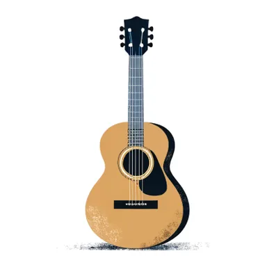
die Gitarre, die Gitarren 기타
Ich spiele Gitarre.저는 기타를 쳐요.
das Instrument, die Instrumente 악기
Spielst du ein Instrument?악기 하나 할 줄 알아요?
이 과의 낱말로 여덟 문제를 풀어요.
설명하는 문장은 앞 명사의 관사와 같은 말로 시작해요.
규칙
명사 뒤에 쉼표를 찍고 문장을 붙여서 그 명사를 자세히 설명할 수 있어요. 설명하는 문장은 der, das, die로 시작해요. 앞의 명사가 der 명사면 der, das 명사면 das, die 명사나 여럿이면 die예요. 동사는 문장 맨 끝에 와요.
| 명사 | 설명하는 문장 |
|---|---|
| der Verein, | der am Abend trainiert |
| das Angebot, | das nichts kostet |
| die Gruppe, | die sich oft trifft |
| die Leute, | die im Chor singen |
주의 두 문장을 하나로 잇는다고 생각하면 쉬워요. Das ist ein Verein. Der Verein trainiert am Abend. 두 번째 문장의 Der Verein을 der로 바꾸고 동사를 끝으로 보내면 돼요. etwas와 nichts 뒤에는 das를 써요. Ich suche etwas, das Spaß macht.
규칙을 보고 바로 확인해 보세요.
Kennst du jemanden, … Yoga macht? 빈칸에 알맞은 말은 무엇인가요?
규칙
설명하는 문장 안에서 그 명사가 '~을'에 해당하면 Akkusativ를 써요. der 명사만 den으로 바뀌고 das와 die는 그대로예요. 설명하는 문장 안에 주어가 따로 있으면 Akkusativ예요.
| 명사 | Nominativ | Akkusativ |
|---|---|---|
| der | der | den |
| das | das | das |
| die | die | die |
| 여럿 | die | die |
주의 구별하는 법은 이래요. 설명하는 문장에서 그 명사가 무엇을 하는 쪽이면 Nominativ, 다른 사람이 그것을 하는 쪽이면 Akkusativ예요. Der Trainer, der die Kinder trainiert. 코치가 아이들을 가르쳐요. Der Trainer, den die Kinder mögen. 아이들이 코치를 좋아해요. 설명하는 문장이 가운데에 들어가면 앞뒤에 쉼표를 찍어요.
규칙을 보고 바로 확인해 보세요.
Der Trainer, … die Kinder haben, ist super. 빈칸에 알맞은 말은 무엇인가요?
규칙
정해지지 않은 사람은 jemand, 정해지지 않은 물건이나 일은 etwas로 말해요. 없다고 말할 때는 사람은 niemand, 물건이나 일은 nichts예요. niemand와 nichts에는 '~ 않다'는 뜻이 들어 있어서 nicht를 또 쓰지 않아요.
| 가리키는 것 | 있을 때 | 없을 때 |
|---|---|---|
| 사람 | jemand | niemand |
| 물건, 일 | etwas | nichts |
주의 jemand와 niemand는 Akkusativ에서 -en이 붙기도 해요. Ich kenne niemanden. 붙이지 않고 Ich kenne niemand.라고 해도 틀리지 않아요. 동사는 er, sie와 같은 모양을 써요. Niemand weiß das.
규칙을 보고 바로 확인해 보세요.
Minjun kennt hier noch … 빈칸에 알맞은 말은 무엇인가요?
듣고 알맞은 것을 고르세요.
Lena가 듣는 강좌는 언제인가요?
Der Kurs, den ich mache, ist am Mittwochabend.
체험 훈련은 어떤가요?
Das Probetraining kostet nichts.
Sora는 무슨 말을 하나요?
Ich kenne hier niemanden, der fotografiert.
Dohyun은 어떤 동호회를 찾나요?
Ich suche einen Verein, der am Abend trainiert.
Lena의 친구 Paula가 Jiu에게 음성 메시지를 남겼어요. 듣고 알맞은 것을 고르세요.
Eine Nachricht von Paula
Paula Hallo Jiu, hier ist Paula. Lena hat mir gesagt, dass du Yoga ausprobieren möchtest.
Paula Der Kurs, den ich mache, ist am Mittwoch um achtzehn Uhr in der Sporthalle zwei.
Paula Du musst nichts mitbringen, nur bequeme Kleidung.
Paula Nach dem Kurs gehen wir immer zusammen etwas trinken. Komm doch mit!
요가 강좌는 언제인가요?
Was muss Jiu mitbringen?
강좌가 끝나면 사람들은 무엇을 하나요?
스포츠 동호회를 소개하는 글이에요. 읽고, 맞으면 richtig, 틀리면 falsch를 고르세요.
Der Sportverein Mainufer stellt sich vor
Wir sind ein Verein, der seit 1950 Sport für alle anbietet. Heute haben wir 400 Mitglieder.
Bei uns gibt es Fußball, Tischtennis, Yoga und einen Chor. Für Kinder haben wir Mannschaften, die am Nachmittag trainieren.
Sie suchen eine Gruppe, die zu Ihnen passt? Kommen Sie zum Probetraining! Es kostet nichts, und niemand muss Erfahrung haben.
Der Mitgliedsbeitrag ist 12 Euro im Monat für Erwachsene und 8 Euro für Kinder.
Jeden Sommer machen wir ein Fest, das alle Mitglieder gemeinsam planen.
Den Verein gibt es seit 1950.
Im Verein kann man nur Sport machen.
합창단도 있어요.
Die Mannschaften für Kinder trainieren am Nachmittag.
Für das Probetraining braucht man Erfahrung.
아무도 경험이 없어도 돼요.
Erwachsene zahlen zwölf Euro im Monat.
설명하는 문장이에요. der, das, die 가운데 알맞은 것을 고르세요.
Das ist ein Verein, jeden Dienstag trainiert.
화요일마다 연습하는 동호회예요.
Ich suche eine Gruppe, am Wochenende wandert.
주말에 걷기 여행을 하는 모임을 찾아요.
Das ist ein Angebot, nichts kostet.
돈이 들지 않는 프로그램이에요.
Die Leute, im Chor singen, sind sehr nett.
합창단에서 노래하는 사람들은 아주 친절해요.
Kennst du jemanden, Yoga macht?
요가 하는 사람을 누구 알아요?
Wo ist der Raum, neben dem Café ist?
카페 옆에 있는 방이 어디예요?
Akkusativ예요. 알맞은 것을 고르세요.
Der Kurs, ich mache, ist Volleyball.
제가 듣는 강좌는 배구예요.
Die Trainerin, wir haben, ist sehr nett.
우리 선생님은 아주 친절해요.
Das Spiel, wir gesehen haben, war spannend.
우리가 본 경기는 흥미진진했어요.
Die Fotos, Sora macht, sind schön.
Sora가 찍는 사진은 아름다워요.
Der Trainer, die Kinder haben, ist super.
아이들을 맡은 코치는 아주 좋아요.
jemand, niemand, etwas, nichts 가운데 알맞은 것을 고르세요.
Kennst du hier ?
여기 누구 아는 사람 있어요?
Das Probetraining kostet .
체험 훈련은 돈이 들지 않아요.
muss Erfahrung haben.
경험은 아무도 없어도 돼요.
Möchtest du trinken? Ja, gern.
뭐 마실래요? 네, 좋아요.
Ich habe heute noch gegessen.
오늘 아직 아무것도 못 먹었어요.
Ist da ? Ja, ich bin hier.
거기 누구 있어요? 네, 저 여기 있어요.
낱말을 순서대로 눌러 문장을 만드세요.
화요일마다 연습하는 동호회예요.
제가 듣는 강좌는 수요일이에요.
재미있는 걸 찾아요.
기타 치는 사람을 누구 알아요?
체험 훈련은 돈이 들지 않아요.
하는 일과 장소를 짝지으세요.
빈칸에 알맞은 낱말을 쓰세요.
Der Verein hat achtzig .
그 동호회는 회원이 여든 명이에요.
Der Kurs ist für .
그 강좌는 초보자를 위한 것이에요.
Wir uns jeden Dienstag.
우리는 화요일마다 모여요.
Klettern macht .
암벽 타기는 재미있어요.
듣고 그대로 써 보세요.
음성 준비 중Der Kurs ist für Anfänger. 그 강좌는 초보자를 위한 것이에요.
음성 준비 중Das Probetraining kostet nichts. 체험 훈련은 돈이 들지 않아요.
음성 준비 중Ich suche eine Gruppe, die zu mir passt. 저한테 맞는 모임을 찾아요.
In meiner Freizeit spiele ich Tischtennis. 저는 쉬는 시간에 탁구를 쳐요.
Ich mache regelmäßig Sport. 저는 꾸준히 운동해요.
Ich singe in einem Chor. 저는 합창단에서 노래해요.
Das macht mir Spaß. 그게 재미있어요.
Ich suche einen Verein, der am Abend trainiert. 저녁에 연습하는 동호회를 찾아요.
Gibt es einen Kurs für Anfänger? 초보자를 위한 강좌가 있어요?
Kann ich einfach mitmachen? 그냥 같이 해도 되나요?
Kennst du jemanden, der auch klettert? 암벽 타는 사람을 누구 알아요?
Wann und wo ist das Training? 연습은 언제 어디에서 해요?
Was kostet der Mitgliedsbeitrag? 회비는 얼마예요?
Gibt es ein Probetraining? 체험 훈련이 있어요?
Wie melde ich mich an? 어떻게 등록해요?
Das ist die Trainerin, die den Kurs leitet. 그 강좌를 맡은 선생님이에요.
Der Kurs, den ich mache, ist sehr gut. 제가 듣는 강좌는 아주 좋아요.
Das ist ein Sport, der fit macht. 몸을 튼튼하게 해 주는 운동이에요.
Wir sind eine Gruppe, die sich jede Woche trifft. 우리는 매주 모이는 모임이에요.
Komm doch mit! 같이 가요!
Hast du Lust, es auszuprobieren? 해 볼 생각 있어요?
Gern, das wäre toll. 좋아요, 그러면 정말 좋겠어요.
Leider habe ich am Mittwoch keine Zeit. 아쉽지만 수요일에는 시간이 없어요.
과제 고르기
역할 대화와 말하기, 쓰기 과제는 대학 생활과 직장 생활 두 가지예요. 하나를 고르면 다음 과에서도 그쪽 과제가 나와요. 언제든 바꿀 수 있어요.
대화 A에서 역할을 하나 고르세요. 상대의 말은 글로 읽고, 내 차례에는 직접 말해요.
대화 B에서 역할을 하나 고르세요. 상대의 말은 글로 읽고, 내 차례에는 직접 말해요.
내 여가를 떠올리고 칸을 채우세요. 완성된 문장을 소리 내어 읽어 보세요.
Mein Hobby ist Badminton.
Ich mache das einmal pro Woche in der Sporthalle.
Klettern ist etwas, das ich gern ausprobieren würde.
이번 학기에 대학 스포츠에서 배드민턴 강좌를 들으려고 해요. 같은 과 친구 Lena가 물어요.
초보자를 위한 강좌이고 월요일 저녁 7시에 체육관 1에서 해요. 한 학기에 20유로예요. 라켓은 빌릴 수 있고 돈이 들지 않아요. 같이 갈 사람을 찾고 있어요.
같은 과 친구 Lena가 대학 스포츠에 대해 물어요. 쪽지를 보고 답하세요. 질문을 듣고 소리 내어 답한 뒤 예시 답과 비교해 보세요.
Machst du dieses Semester beim Hochschulsport mit? 이번 학기에 대학 스포츠 해요?
Ja. Ich habe einen Badmintonkurs gefunden, der für Anfänger ist.
Wann findet der Kurs statt? 강좌는 언제 해요?
Am Montag um neunzehn Uhr in der Sporthalle eins.
Und was kostet er? 얼마예요?
Zwanzig Euro für das ganze Semester.
Musst du etwas mitbringen? 뭘 가져가야 해요?
Nein, nichts. Den Schläger kann man dort leihen.
Gehst du allein? 혼자 가요?
Ja, aber ich suche noch jemanden, der mitkommt. Hast du Lust?
Eine Anmeldung zum Kurs
온라인 등록이 되지 않아요. 대학 스포츠 사무실에 메일로 등록을 부탁해 보세요. 여섯 문장이면 충분해요.
Sehr geehrte Damen und Herren, mein Name ist Minji Choi, und ich studiere Informatik im ersten Semester. Ich interessiere mich für den Badmintonkurs, der am Montag um 19 Uhr stattfindet. Ich würde mich gern anmelden, aber die Anmeldung online funktioniert leider nicht. Gibt es noch einen Platz, der frei ist? Können Sie mir auch sagen, ob ich etwas mitbringen muss? Ich freue mich auf Ihre Antwort. Mit freundlichen Grüßen, Minji Choi
다 쓴 뒤에 확인해 보세요.
퇴근 뒤에 운동을 하고 싶어서 동네 스포츠 동호회에 전화해요. 동호회 직원의 질문에 답해요.
탁구를 하고 싶어요. 예전에 한국에서 자주 쳤어요. 5시에 일이 끝나서 저녁에 시간이 돼요. 체험 훈련이 있는지, 회비가 얼마인지 알고 싶어요.
스포츠 동호회 직원이 물어요. 쪽지를 보고 답하세요. 질문을 듣고 소리 내어 답한 뒤 예시 답과 비교해 보세요.
Sportverein Mainufer, guten Tag. Sportverein Mainufer입니다, 안녕하세요.
Guten Tag, hier ist Minji Choi. Ich suche einen Verein, der Tischtennis anbietet.
Da sind Sie bei uns richtig. Haben Sie schon gespielt? 잘 찾아오셨어요. 쳐 보신 적 있으세요?
Ja, ich habe früher in Korea oft gespielt.
Wann haben Sie Zeit? 언제 시간이 되세요?
Ich arbeite bis siebzehn Uhr. Ich suche eine Gruppe, die am Abend trainiert.
Wir haben eine Gruppe am Mittwoch um neunzehn Uhr. 수요일 19시에 하는 모임이 있어요.
Das passt gut. Gibt es ein Probetraining?
Ja, das erste Training kostet nichts. 네, 첫 연습은 돈이 들지 않아요.
Sehr gut. Und was kostet danach der Mitgliedsbeitrag?
Eine Nachricht an die Kollegen
같이 운동할 사람을 찾는 글을 회사 동료들에게 써 보세요. 여섯 문장이면 충분해요.
Liebe Kolleginnen und Kollegen, ich habe einen Verein gefunden, der am Mittwochabend Tischtennis anbietet. Das Training ist um 19 Uhr in der Sporthalle am Mainufer. Das erste Training kostet nichts, danach zahlt man 12 Euro im Monat. Ich suche noch jemanden, der mitkommen möchte. Niemand muss Erfahrung haben! Wenn ihr Lust habt, schreibt mir bitte bis Dienstag. Viele Grüße, Minji
다 쓴 뒤에 확인해 보세요.
Ich kann über meine Freizeit sprechen.내 여가에 대해 말할 수 있어요.
Ich kann nach Kursen und Vereinen fragen und mich anmelden.강좌와 동호회에 대해 묻고 등록할 수 있어요.
Ich kann Personen und Dinge genauer beschreiben.사람과 물건을 더 자세히 설명할 수 있어요.
Ich kann jemand, niemand, etwas und nichts richtig benutzen.jemand, niemand, etwas, nichts를 알맞게 쓸 수 있어요.